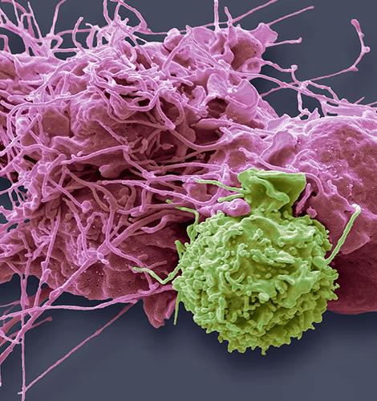
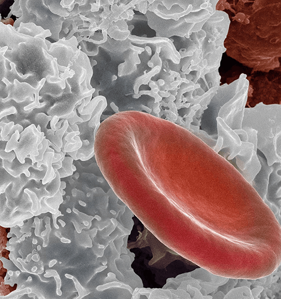
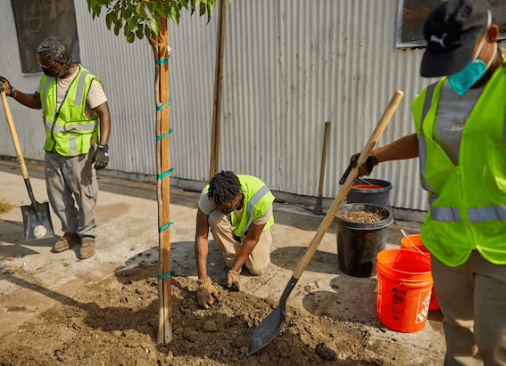

NATIONAL GEOGRAPHIC
Got a cold Here’s how your immune system is fighting it.
SCIENCE
- 
- 
All day every day, a host of potential invaders attacks the body, particularly during the indoor season in cold climates. These microorganisms, called pathogens, come in the form of viruses, bacteria, parasites, and fungi, and the body’s immune system sets up multiple lines of defense to fight them.
Not confined to a particular set of organs, the immune system operates throughout the body, its work carried out by the body’s trillions of immune cells and specialized molecules. The first line of defense lies in the physical barriers of the skin and mucous membranes, which block and trap invaders. A second, the innate system, is composed of cells including phagocytes, whose basic job is to eat the invaders. In addition to these immune cells, many chemical compounds respond to infection and injury, move in to destroy pathogens, and begin repairing tissue.
The body’s third line of defense the adaptive defense system is a final, more specific response. Its elite fighting units are trained on the job; that is, they are created in response to a pathogen that the body has not seen before. Once activated in one part of the body, the adaptive system functions throughout, and it memorizes the antigens (a substance that provokes an immune system response). The next time they come along, the body hits back quicker and harder.
Killer cells
The body’s internal defenses rely heavily on two kinds of aggressive cells: phagocytes and natural killer cells (or NK cells). The main phagocytes are macrophages. Literally “big eaters,” wandering macrophages move about in search of infections and feast on microbes and debris. Fixed macrophages live in such organs as the liver and the brain. After macrophages, the most important kind of phagocytes are neutrophils, the most abundant type of white blood cell. Another kind of white blood cell, the eosinophil, is not a heavy eater as phagocytes go, but it is important in killing worms and other parasitic invaders.
Natural-born killers
The other family of cells, the NK cells, compose some 5 to 15 percent of all lymphocytes. Like the phagocytes, they reside in the spleen, lymph nodes, and red bone marrow. These helpful assassins can terminate a number of infectious microbes and cancer cells by zeroing in on cells that have inadequate plasma membrane proteins. Natural killers shoot their targets full of holes, attacking the membrane of a target microbe with chemicals called perforins, which make the microbe leak to death. They can also kill by releasing into target cells molecules that lead to apoptosis programmed cell death.
Unlike the broad attack of the innate defense system, the adaptive immune system attacks pathogens with specific, made-to-order antibodies and cells. The antibodies and lymphocytes of the adaptive system can recognize millions of different pathogens, some not even found in nature, and they can distinguish infected, cancerous, or foreign cells in an organ from normal cells of the same type.
Each antibody and lymphocyte recognizes only one kind of antigen. The receptors on the surface of each lymphocyte recognize the specific chemical structure of the antigen and fit the antigen like a key sliding into a lock. The body must be primed by an introduction to these antigens. Then the old adage applies: That which does not kill you makes you stronger. The adaptive immune system manufactures the necessary antibodies and cells so that upon reexposure you can fight back and win.
And so, as you head into the season of flus and colds, know that your adaptive system is there for you: a highly specialized fighting force with a killer “memory.”
Comments :
- john Very good
- john Very good
Leave a Reply
Your email address will not be published. Required fields are marked*
Related posts:
-
The surprising way that millions of new trees could transform America
When community groups planted 125 trees in two low-income neighborhoods in north central Detroit this past spring, changes were seen almost immediately. Residents began using the newly greened streets
View article -
Ginkgo trees nearly went extinct. Here’s how we saved these ‘living fossils.’
On the streets of Manhattan and Washington, D.C., in neighborhoods in Seoul and parks in Paris, ginkgo trees are gradually losing their bright yellow leaves in reaction to the first bout of frigid winter air.
View article -
How climate change disrupts fall foliage
Fall is a special time of year in the forests along the eastern seaboard, as trees explode in brilliant shades of red and gold. The air is crisp, the days are still warm, and the turning foliage offers an irresistible riot of color
View article